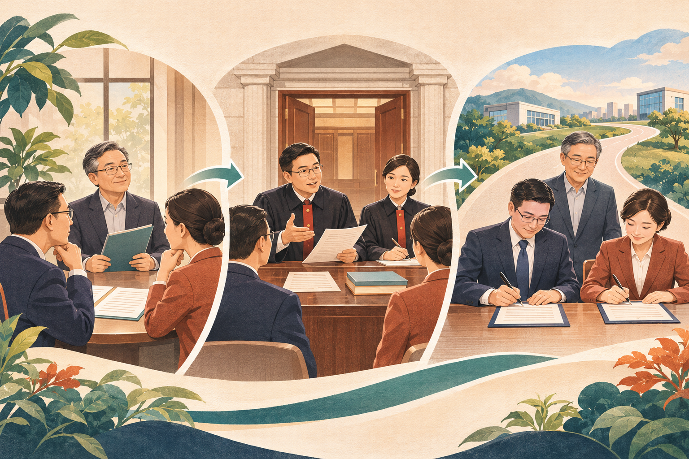

2026年11月15日 · 合同纠纷
最高人民法院国际商事法庭近日成功调解一起中外企业合同纠纷。专家协助谈判不等于专家裁判；诉中调解要关注自愿、法院调解书及生效节点。
专家主持调解、当事人谈妥了，是否就像法院判决一样可以申请强制执行？关键要先看：这是发生在什么程序中的调解，最后形成了什么法律文书。
图示：中立专家协助沟通，调解是否成立仍由当事人自主决定。
最高人民法院国际商事法庭于2026年11月13日公开开庭审理意大利企业Dainese S.p.A.与中国厦门创见安全帽有限公司的合同纠纷。双方本诉、反诉交织，争议还涉及域外法适用。根据最高法公开报道，双方共同从国际商事专家委员会名录选定专家主持审前调解；调解使用中英双语，后由合议庭就法律适用和诉讼风险释明，双方当庭成功调解。
报道没有公布和解的具体条款。因此，不能据此推断赔偿数额、付款安排或其他商业条件。这个案例的普法价值，在于展示专家促和与法院释法如何衔接。

理解流程：专家促和 → 法院释法 → 双方确认调解方案。
专家的作用是中立地听取意见、厘清商业争议并协助缩小分歧，不是代替法院作出裁判。法院调解依法以自愿为前提，调解协议内容也不得违反法律规定。任何一方都不应因“专家已经谈过”或“法官参加了沟通”而被迫接受方案。
重点：专家参与，不会自动把普通商业和解变成法院调解书；决定法律效力与后续执行方式的，是调解所处程序和形成的文书。
《民事诉讼法》第96条确立法院调解的自愿原则；第99条要求协议双方自愿、内容合法。依第100条，法院通常制作调解书，写明诉讼请求、案件事实和调解结果；调解书由双方签收后生效。
第101条列出可以不制作调解书的情形，例如能够即时履行的案件等；此时协议应记入笔录，并由双方当事人、审判人员、书记员签名或盖章后生效。若调解未达成，或调解书送达前一方反悔，依第102条法院应及时判决。
在法院诉讼中和解，可与法院沟通将明确、可履行的约定制作成法院调解书。调解书生效后一方不履行，另一方可以依法申请执行。不要把庭外谈判纪要、私人调解协议与法院调解书混为一谈。
示例：甲乙企业在法院审理买卖合同纠纷期间协商付款与退货。若协议只写“双方友好解决”，没有金额、期限和交付标准，后续履行仍容易发生争议。建议将权利义务具体化，并依法形成相应法院文书。
《中华人民共和国民事诉讼法》第96、99—102条及第247条。
最高人民法院国际商事法庭：《“专家促和”成功首案 中外企业续写合作新篇》（2026年11月14日）。查看最高法原文
民事诉讼法全文：最高人民法院知识产权法庭公布文本
中国执业律师，主要从事民商事争议、劳动与工伤、合同事务及涉刑案件办理，并参与湘江新区劳动仲裁工作；持续通过“闪闪的每日普法站”分享可核验、能落地的法律知识。
本文仅作一般普法，不构成个案法律意见。